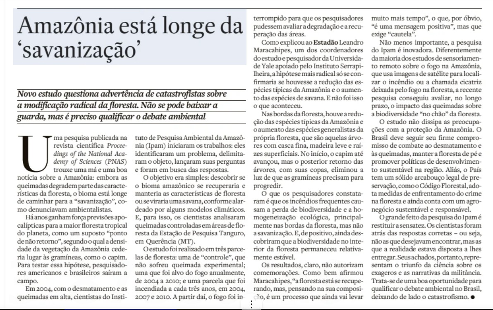

Linha do tempo · papers de alto nível
Evidências convergentes (Nature/Science/PNAS) que enquadram o paper-base de 2026.
Análise crítica de Maracahipes et al. 2026 (PNAS) — 20 anos de queimadas controladas em Tanguro/MT — confrontada com Nature, Science, AGU e Biogeosciences (2014–2026).
Por que esta análise? A matéria-semente do Estadão (à direita) interpreta o paper de forma editorialmente enviesada — fala em "triunfo da ciência sobre exageros e narrativas da militância". Aqui reabrimos os achados originais e cruzamos com a literatura de alto nível.

Evidências convergentes (Nature/Science/PNAS) que enquadram o paper-base de 2026.
Quais journals sustentam esta análise crítica.
O paper PNAS de Maracahipes et al. (2026) é boa ciência; a manchete do Estadão é jornalismo enviesado. Há três conclusões que o leitor precisa internalizar:
(1) O paper não desmente o tipping point — ele refina o conceito. A transição amazônica plausível NÃO é "campo de capim" (caricatura editorial), mas floresta empobrecida, homogeneizada, com perda de funções ecossistêmicas (chuva via rios voadores, estoque de carbono, fauna dispersora, alimentos indígenas). O próprio paper diz: "recurrent fires or future climatic changes could drive long-lasting degradation or human-derived savannas". Em outras palavras: se o fogo continuar — e está continuando — a savanização humana acontece. O experimento provou que isso PÔDE ser revertido porque o fogo cessou em 2010 num desenho experimental controlado. No mundo real (180.000 focos só em 2024), a condição não se verifica.
(2) "Boa notícia" tem letra miúda enorme. A recuperação celebrada pelo Estadão: (a) ocorre em UM sítio (Tanguro-MT) com fauna intacta, (b) leva 10–15 anos para estrutura, séculos para composição funcional, (c) gera floresta MAIS vulnerável ao próximo distúrbio (super El Niño 2026–27 a caminho), (d) só vale se o fogo cessar — exatamente o oposto da tendência regional, (e) nas bordas (que são quase tudo na Amazônia fragmentada) a biodiversidade colapsa mesmo assim. Lapola 2023 (Science) já documentou 38% da Amazônia degradada — degradação que parece floresta no satélite.
(3) O verdadeiro alerta do paper é mais grave que o tipping point binário. A homogeneização ecológica descrita por Maracahipes — generalistas substituindo especialistas, fauna empobrecida, dossel raso — é invisível ao satélite e à opinião pública. É uma Amazônia "verde" mas funcionalmente morta para o clima global, para os 28 milhões de amazônidas e para 60% do PIB agrícola brasileiro que depende dos rios voadores. Convergência com Flores et al. 2024 (Nature) e Lapola et al. 2023 (Science): o risco real é a floresta-zumbi, não o capinzal.
Atenção real para as pessoas: não baixar a guarda é insuficiente — é preciso intensificar. O paper, lido honestamente, diz que a janela de reversibilidade existe SE houver cessação de queimadas + manutenção de fauna + conectividade. Confundir "a Amazônia ainda pode se recuperar" com "a Amazônia está bem" é o tipo de leitura que inviabiliza a ação que o próprio paper diz ser necessária.
A Amazônia é doutrina, não pano de fundo. O paper PNAS de 2026, lido em conjunto com Bourgoin (Biogeosciences 2025), Marengo (AJCC 2024), Liu (AGU Advances 2026) e o conjunto Nobre/Lovejoy/Flores, traz cinco implicações operacionais diretas para o Comando Militar da Amazônia (CMA), o CENSIPAM, o Estado-Maior do Exército (EME) e o futuro IPEAM/IME (Manaus):
(a) Janela operacional fluvial encolhendo. A estação seca do sul-sudeste amazônico já alongou uma semana por década nos últimos 45 anos (SPA AR2025). Para a Op. Ágata Amazônia e equivalentes, isso significa: períodos mais curtos para deslocamento de tropas e abastecimento por hidrovias, maior dependência de aeromobilidade (heliporto e VANT) e logística por via terrestre em terreno mais seco e mais inflamável. O super El Niño projetado para 2026–27 (Marengo 2024) deve agravar o quadro nas próximas duas estações secas.
(b) Fogo descontrolado como vetor de risco operacional. Em 2024 foram registrados ~180.000 focos na Amazônia (148.000 só no Brasil), 98% antrópicos. A degradação por fogo aumentou +400% e emitiu 791 ± 86 Mt CO₂ (Bourgoin 2025). Para o CMA e CENSIPAM, isso traduz-se em: fumaça reduzindo visibilidade aérea (efeito documentado na crise de Manaus 2023), cicatrizes consumindo corredores logísticos, comprometimento da rede SIPAM/SIVAM por ruído atmosférico e maior demanda de apoio à Defesa Civil em desastres encadeados.
(c) Floresta homogeneizada perde função de cobertura, água e subsistência. A descoberta central do paper — substituição de especialistas (madeira densa, copa fechada, fauna abundante) por generalistas (madeira leve, copa rala, fauna empobrecida) — implica perda de cobertura visual para operações em ambiente de selva, redução de fontes naturais de água potável (igarapés alimentados por evapotranspiração), e queda de subsistência para patrulhas remotas (caça regulamentada, frutos, pesca). Esses efeitos não aparecem em imagens de satélite, mas aparecem na cartilha doutrinária do CIGS (Centro de Instrução de Guerra na Selva).
(d) Soberania = floresta funcional, não floresta verde. A tese do Centro Soberania e Clima (Esc. Sup. Defesa, presidido pelo Gen Etchegoyen) é reforçada: floresta funcional é infraestrutura crítica de defesa — regula clima, segurança hídrica do Centro-Sul (60% do PIB agrícola via rios voadores), abastece populações de fronteira, dificulta penetração de organizações criminosas transnacionais. Floresta homogeneizada perde essa função enquanto continua "verde" para o satélite — exatamente o cenário que adversários e atores ilícitos podem explorar.
(e) O paper é insumo direto para IPEAM/IME e doutrina conjunta. O Instituto de Pesquisa do Exército na Amazônia (em criação no CR-MN/Manaus) com linhas em IA, quântica, transição energética e biotecnologias deveria incorporar: (i) modelos de fogo + vegetação + clima para apoio à decisão (ex. modelo SimAmazonia + HighMass + previsão sazonal), (ii) sensoriamento remoto multiespectral focado em degradação e não apenas em corte raso, (iii) uso de dispersores naturais (fauna) como indicadores de saúde da floresta em áreas de fronteira, (iv) integração CENSIPAM × INPE × IPAM em painel único de risco operacional climático-ambiental.
Síntese para o nível estratégico: a Amazônia descrita pelo paper de 2026 NÃO é uma Amazônia salva — é uma Amazônia em deslocamento composicional acelerado, ainda recuperável regionalmente, mas com janela política de 5–10 anos. Para as Forças Armadas, "preservar a Amazônia" deixou de ser pauta ambiental e tornou-se requisito de operação. O Brasil que preside a COP30 em Belém e mobiliza 1.100 militares na Op. Ágata pode ser o mesmo Brasil que entrega à próxima geração uma Amazônia funcionalmente morta, se confundir resiliência demonstrada em três parcelas experimentais com saúde do bioma inteiro.